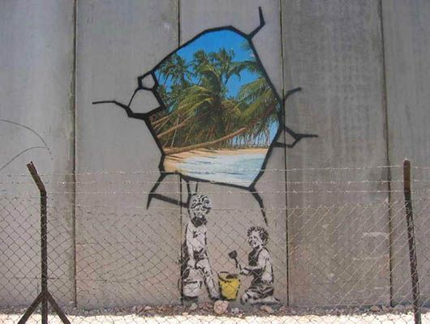
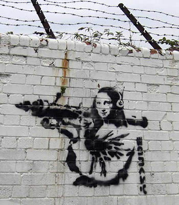
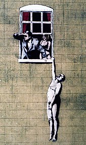
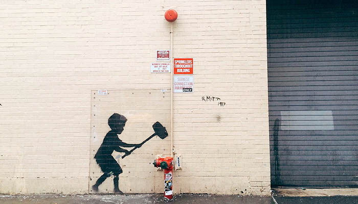

| SL. NO. |
PAINTING |
DESCRIPTION |
SIZE |
PRICE |
| 1. |
 |
By substituting a weapon with a bunch of flowers, Banksy
is advocating peace instead of war,and he opted to install this message
of peace in a high-conflict area. The work also carries the message that
peace comes with active hard work. The bouquet of flowers in this work,
in additionto symbolizing peace, life, and love, may also be understood
as commemorating lost lives in anage old religious conflict.
It is a fine example of Banksy's use of art to relay messages of
social importance. |
890*600 |
$5000 |
| 2. |
 |
This mural depicts two young boys playing with buckets and shovels,
like children creating sandcastles on a beach. The boys, one standing,
the other kneeling, look back at the viewer,rendered in Banksy's
typical black and white stencil aesthetic. Just above the boys, the artist has
created the illusion of a broken section of the grey wall on which
the mural was created. Through this false hole, a photorealistic
color image of a tropical beach paradise is visible, with sand, water,
and several palm trees. |
780*567 |
$6900 |
| 3. |
 |
This mural depicts two young boys playing with buckets and shovels,
like children creating sandcastles on a beach. The boys, one standing,
the other kneeling, look back at the viewer, rendered in Banksy's
typical black and white stencil aesthetic. Just above the boys,
the artist has created the illusion of a broken section of the grey
wall on which the mural was created. Through this false hole,
a photorealistic color image of a tropical beach paradise is visible
with sand, water, and several palm trees. |
890*543 |
$2499 |
| 4. |
 |
This rather humorous scene is one of Banksy’s most famous,
painted in Bristol, England. Along with the idea that we’ve all
got some things to hide, this piece seems to warn us
that things aren’t always what they seem.
Don’t blindly believe everything you’re told,
as someone’s dishonesty may be creating an illusion. |
788*666 |
$4500 |
| 5. |
 |
This more recent Banksy work serves as an excellent example of the
way that "guerrilla"street artists use the surrounding environment as an
integral part of their works. In this work,Banksy has stenciled a simple black
silhouette of a child with a large mallet in the process of striking something in
front of him. The pre-existing object that the boy is about to hit is a red
fire hydrant, which has a pipe coming up through the top leading directly to
a round red object several feet higher (possibly a fire alarm).
With the inclusion of the small boy with the mallet, this utilitarian plumbing
fixture is instantly transformed to look like a "high striker" or "strength tester". |
666*444 |
$3899 |